S7-1200 与 S7-300 CP 之间的以太网通信可以通过 UDP 协议来实现，使用的通信指令是在S7-1200 CPU 侧调用通信-开放式用户通信TSEND_C，TRCV_C指令或TCON，TDISCON，TUSEND，TURCV 指令,在 S7-300 CPU 侧调用 AG-SEND, AG-RECV 指令来实现。
此外对于伙伴是S7-400 CP也可以参考本文档。
测试软/硬件：
① S7-1214 DC/DC/DC V4.4
② S7-315-2PN/DP V2.6
③ S7-300 CP343-1 V2.0
④ STEP7 V16
所完成的通信任务：
① S7-1200 CPU将通讯数据区 DB4 块中的 10 个字节的数据发送到 S7-300 CPU的接收数据区 DB5 块中。
② S7-300 CPU将通讯数据区 DB5 块中的 10 个字节的数据发送到 S7-1200 CPU的接收数据区 DB4 块中。
该部分内容和 S7-1200 CPU 与S7-300 PN UDP通信-TIA不同项目->S7-1200 侧硬件组态、编程和连接参数的配置 章节基本一致，请参考链接。
不同地方在于使用TSEND_C设置的伙伴IP地址和端口号（如对方CP343-1 的 IP：192.168.0.4，端口号：2000），如图1所示。
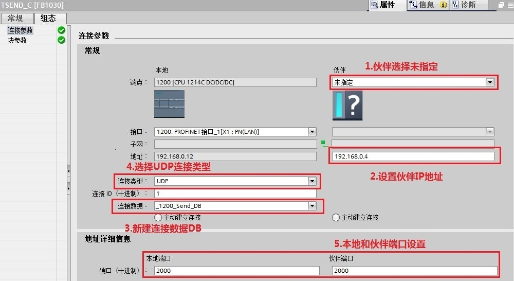
图1. 通过 TSEND_C 配置伙伴IP地址和端口号
1.添加300CPU和CP343-1硬件并命名PLC
然后进入 “项目视图”，在“项目树” 下双击 “添加新设备”，在对话框中选择所使用的 S7-300 CPU 添加到机架上，命名为 300CP，如图2所示。
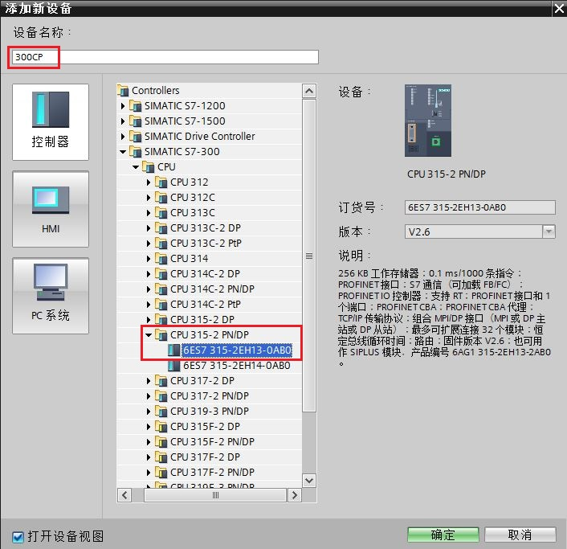
图2. 添加300 CPU设备
为了编程方便，使用 CPU 属性中定义的时钟位，定义方法如下：
在 “项目树” > “300PN” > “设备组态” 中，选中 CPU ，然后在下面的属性窗口中，“属性” > “时钟存储器” 下时钟字节定义在 MB0，如图3所示。
时钟位使用 M0.5，以 1Hz 的速率自动激活发送任务。
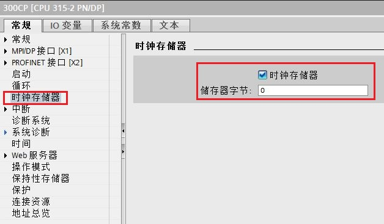
图3. 启动时钟存储器
2.组态CP343-1并配以太网地址
在 “设备视图”中点击 CP 上代表 PROFINET 通信口的绿色小方块，在下方会出现 PROFINET 接口的属性，在 “以太网地址” 下分配 IP 地址为 192.168.0.4，子网掩码为255.255.255.0，如图4所示。
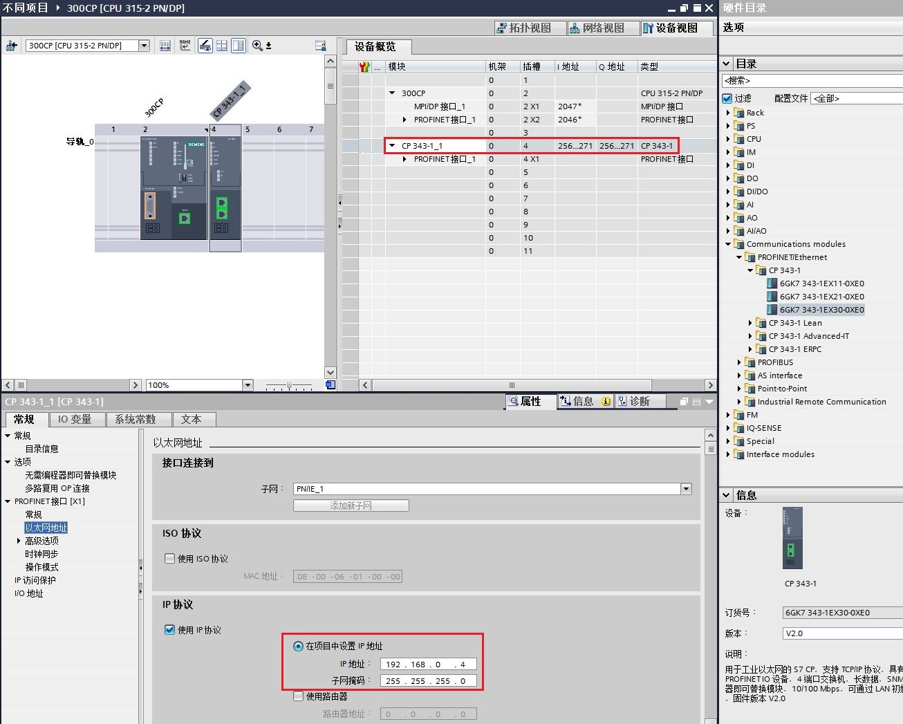
图4. 分配300CP IP 地址
3.网络视图内组态UDP连接
①点击设备和网络，在网络视图内在300CPU侧新建UDP连接，如图5所示。注意是在CPU上右键添加新连接，而不是CP上添加新连接。
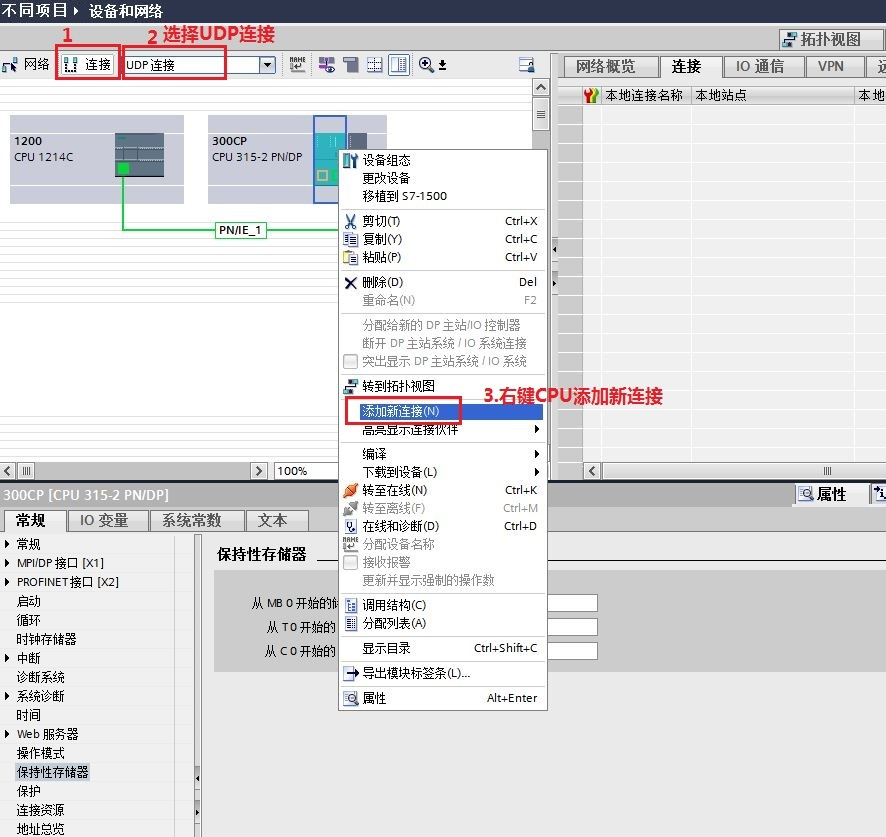
图5. 300CPU侧新建UDP连接
②选择未指定的伙伴，确认连接ID号，然后确定，如图6所示。注意本地接口选择CP343-1。
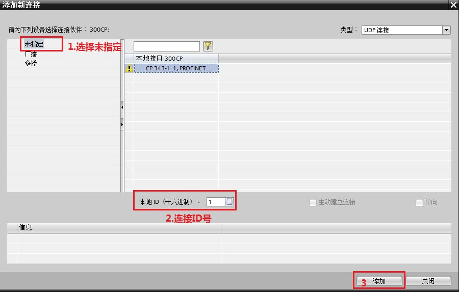
图6. 新建未指定UDP连接
③添加完成后，在网络视图-连接内可以查看新建的连接。点击新建的UDP连接可进一步设置UDP连接参数， 如图7所示。
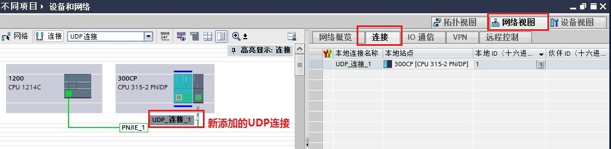
图7. 查看新建的UDP连接
④连接的常规-属性内，设置新建连接的本地ID和伙伴IP及端口，如图8-9所示。
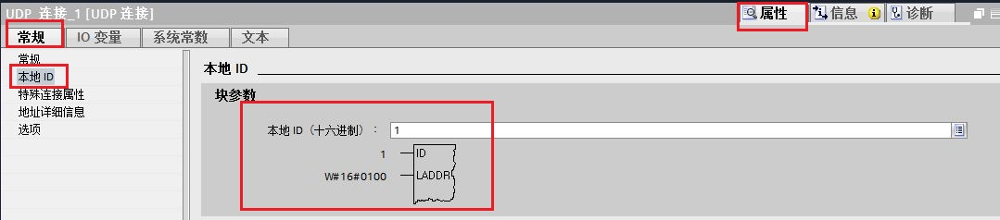
图8.设置连接的本地ID
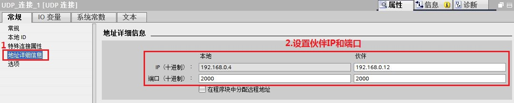
图9.设置连接的伙伴IP及端口号
4.在 S7-300 中调用通信指令
在OB1中，从“指令”>“通信 ”>“通信处理器 ”>“SIMATIC NET CP”下，调用“AG_SEND” 、“AG_RECV ”通信指令。创建接收和发送数据块 DB5，发送10字节数组，接收10字节数组， 如图10所示。
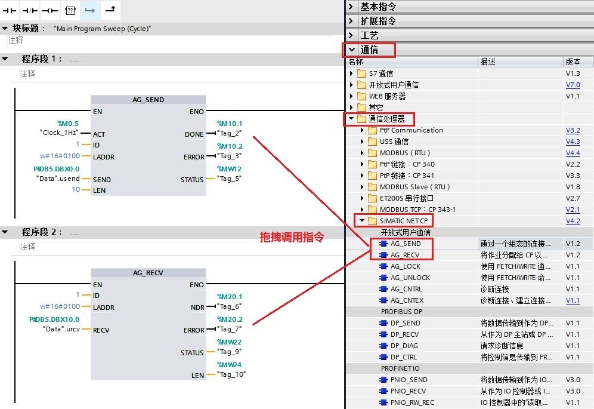
图10. 调用AG_SEND和AG_RECV指令
指令管脚参数说明：
CALL “AG_SEND” |
// 调用 AG_SEND |
|
ACT |
:=%M0.5 |
// 使用 1Hz 的时钟脉冲，上升沿激活发送任务 |
ID |
:=1 |
// 连接号，要与连接配置中一致 |
LADDR |
:=W#16#100 |
// CP 的地址，要与配置中一致见图8，块参数 |
SEND |
:=“Data”.usend |
// 发送数据区 |
LEN |
:=10 |
// 发送数据的长度 |
DONE |
:=%M10.1 |
// 为1时，发送完成 |
ERROR |
:=%M10.2 |
// 为1时，有故障发生 |
STATUS |
:=%MW12 |
// 状态代码 |
CALL “ AG_RECV” |
// 调用 AG_RECV |
|
ID |
:=1 |
// 连接号，要与连接配置列表中一致， |
LADDR |
:=W#16#100 |
// CP 的地址，要与配置中一致见图8，块参数 |
RECV |
:=“Data”.urcv |
// 接收数据区 |
NDR |
:=%M20.0 |
// 为1时，接收到新数据 |
ERROR |
:=%M20.1 |
// 为1时，有故障发生 |
STATUS |
:=%MW22 |
// 状态代码 |
LEN |
:=%MW24 |
// 接收到的实际数据长度 |
300CPU侧配置和编程完成，编译并存盘。
下载两个 CPU 中的所有硬件组态及程序，实现 两个 CPU 之间数据交换，监控结果如图11所示。
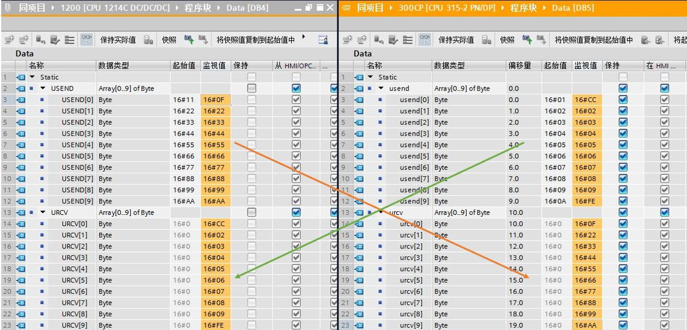
图11. 监控结果